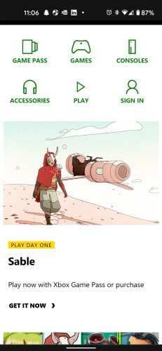
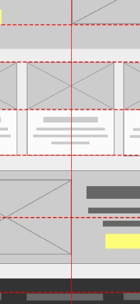

White Space
xbox.com
In this screenshot we can see some great use of white space. The white space helps the page to be clean and organized. It makes the website atractive and appealing to the user. The screenshot also presents some great contrast between the green icons and the stark white background.
Fitt's Law
Mix
The company brilliantly describes Fitt's law.The company want's you to get the Mix app in a clear way. The company made the button to get the app huge and so that it is easy to press.
Alignment
UX-Engineer
Alignment can be easy to overlook because its often invisible. In the first lesson of this course, we discussed how unity was the end goal of UI Design. Alignment helps us to create a sense of unity by providing structure and connecting elements in a subtle, yet powerful way.